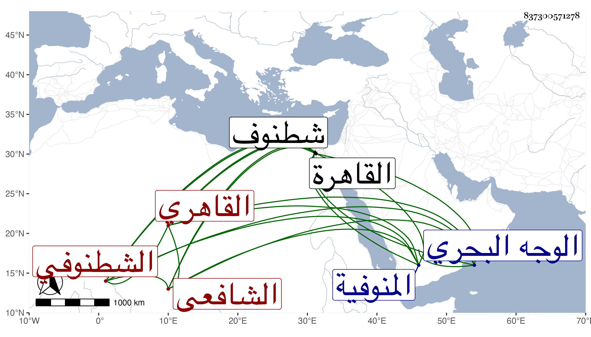

0902Sakhawi.DawLamic.ITO20230111-ara1.EIS1600.837300571278
Biography ID: 837300571278
889
محمد بن إبراهيم بن عبد الله أو أبو بكر ووجدته بخطه ولعلها كنية عبد الله الشمس الشطنوفي ثم القاهري الشافعي والد أحمد الماضي . ولد بعد الخمسين وسبعمائة بشطنوف في المنوفية من الوجه البحري وقدم القاهرة شابا فاشتغل بالفقه والفرائض والعربية والقراءات وغيرها ولم يرزق الأسناد العالي إنما كان عنده عن التقي الواسطي ونحوه ومهر في العربية والفرائض وتصدر في القراآت بالجامع الطولوني وفي الحديث بالشيخونية وانتفع به الطلبة سيما في العربية لانتصابه لأشغالهم بجامع الأزهر تبرعا وكان كثير التواضع مشكور السيرة . مات في ليلة الاثنين سادس عشري ربيع الأول سنة اثنتين وثلاثين بعد علة طويلة وقد قارب الثمانين . ذكره شيخنا في إنبائه والمقريزي في عقوده وكرره وقال : كان مشكور السيرة معروفا بالفضيلة خيرا متواضعا امتنع من نيابة الحكم وغيرهما وممن أخذ عنه العربية العلم البلقيني والشرف المناوي والشمني وخلق ممن لقيته وجود عليه القرآن الجلال القمصي رحمه الله وإيانا .
